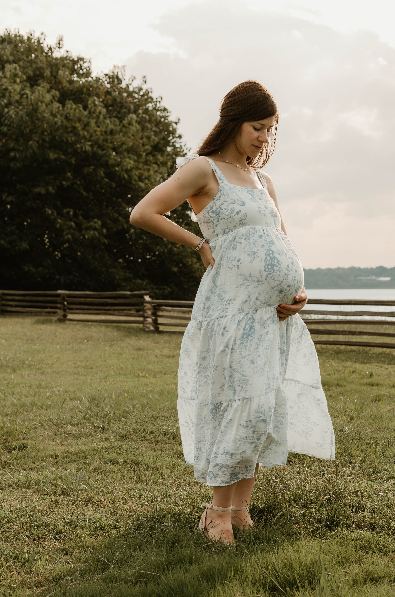
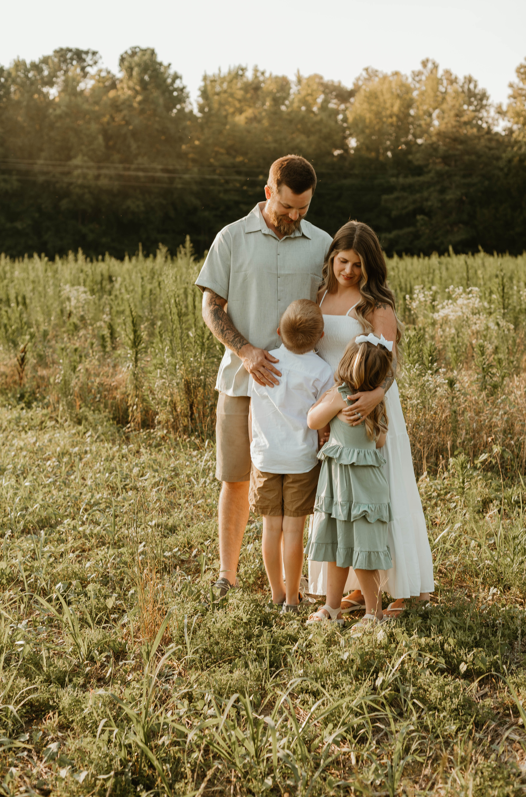

Lifestyle family photography created with warmth, real connection, and intention.
Book Your SessionThe tiny details. The belly laughs. The little hands you never want to let go of. The milestones hit. The new adventures. My goal is to create storytelling images that preserve the love and connection of your family during these beautiful seasons of life.

Celebrating the beauty of motherhood and the waiting season.
Capturing those tiny details before they grow.

Preserving the laughter, love, and connection of your family.
“I had the pleasure of being photographed by Grace & Olive Lens for a breastfeeding session with my 9 month old. Ashley made me feel very comfortable and nothing was awkward at all. I was worried about my baby boy because he gets so distracted so easily, but he was comfortable as well. The setting was perfect and she captured moments in time that I get to cherish forever. athe photos were beautifully created and edited. Highly recommend.”
Ashley photographed my oldest kiddo before starting his first full year of school. She did an amazing job and even got some perfect shots of my two littles playing. I could not have asked for a better photographer and will never use anyone else.
“Add another beautiful review that shows the value of your work.”
© 2026 Grace & Olive Lens